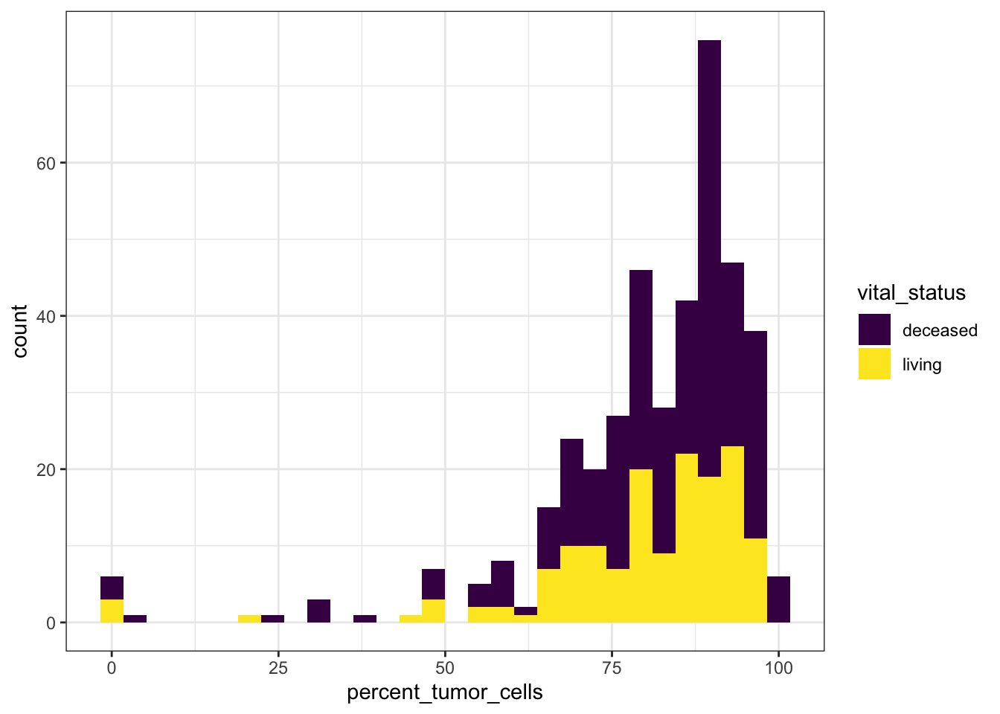
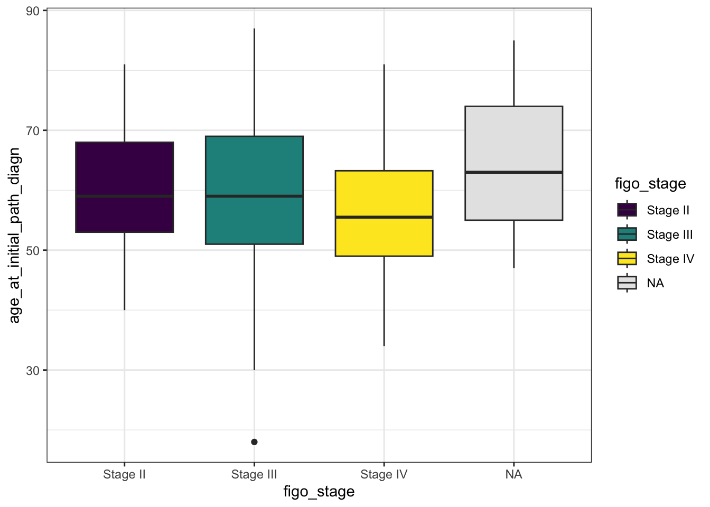
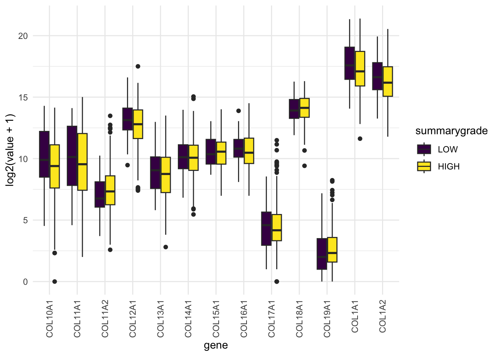
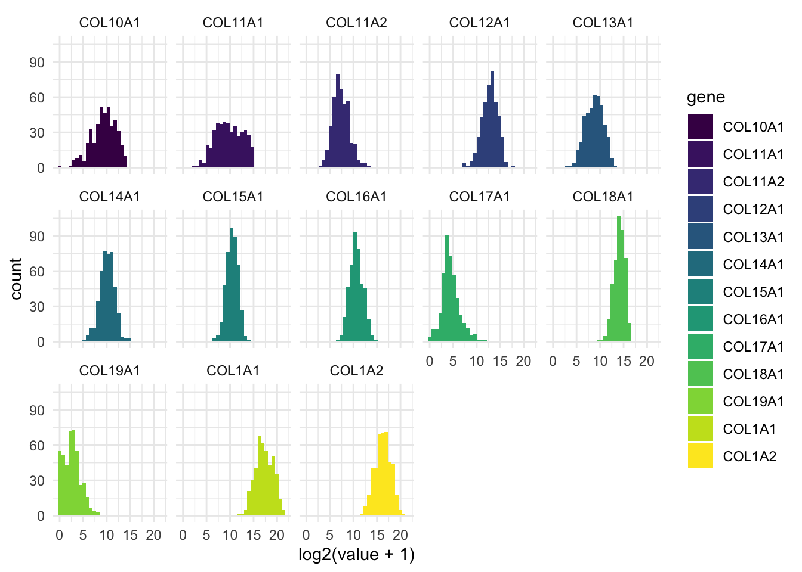
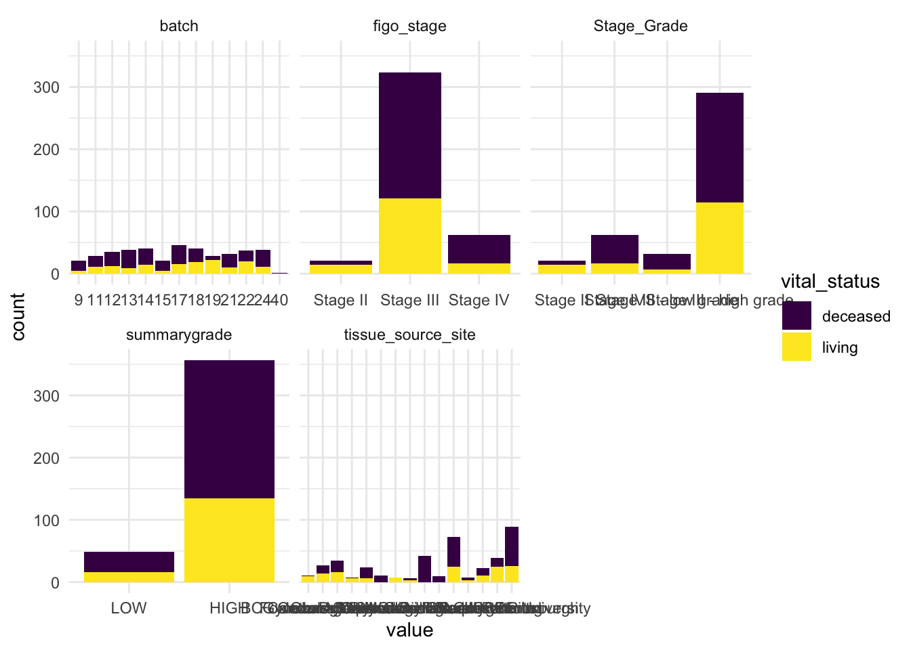
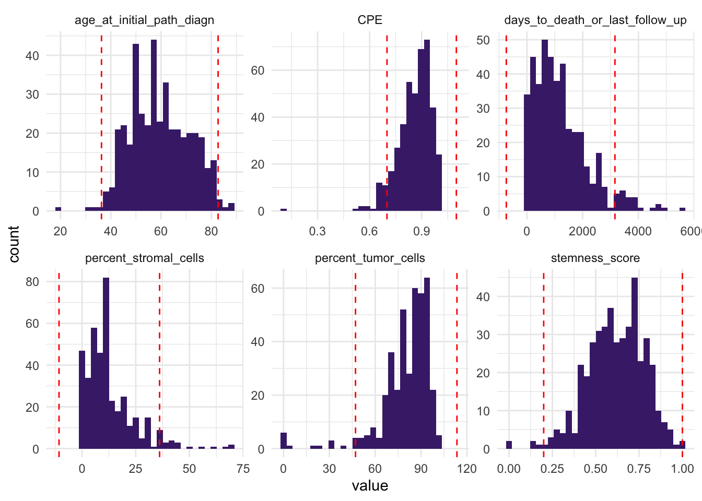
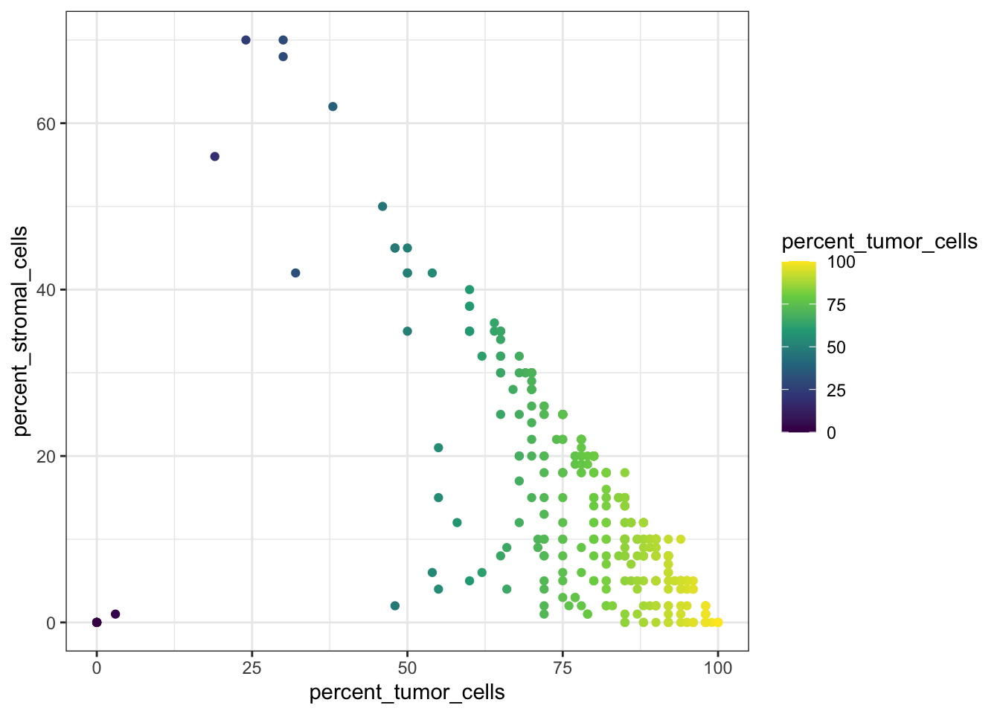
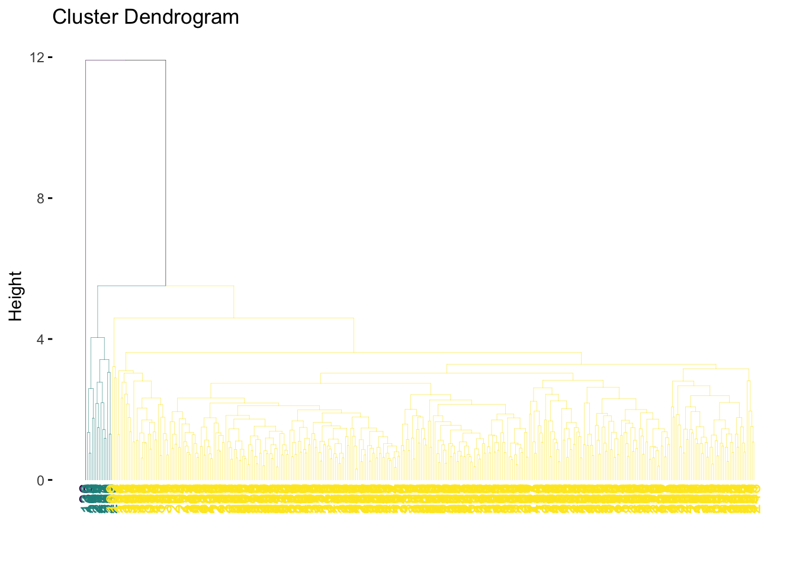
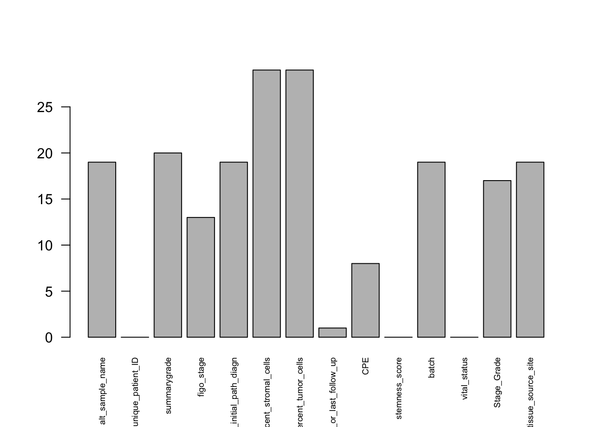

library(tidyverse)
library(factoextra)Presentation 2: Summary Statistics and Data Wrangling
Now that we have cleaned our data, it is time to look more closely at what the dataset actually contains. In this presentation, we will continue with exploratory data analysis (EDA) and use tidyverse tools to summarize, reshape, and inspect the data.
Load Packages and Data
Let’s begin by loading the packages we’ll need for data wrangling and plotting:
Next, bring in the cleaned dataset we prepared earlier:
load("../data/GDC_Ovarian_cleaned.RData")
class(df_comb)[1] "tbl_df" "tbl" "data.frame"This gives us a quick check that the object loaded correctly and lets us inspect the first few rows.
df_comb %>% dplyr::slice(1:5)# A tibble: 5 × 58
alt_sample_name unique_patient_ID summarygrade figo_stage
<chr> <chr> <fct> <fct>
1 TCGA-20-0987-01A-02R-0434-01 TCGA-20-0987-01A HIGH Stage III
2 TCGA-24-0979-01A-01R-0434-01 TCGA-24-0979-01A HIGH Stage IV
3 TCGA-23-1021-01B-01R-0434-01 TCGA-23-1021-01B HIGH Stage IV
4 TCGA-04-1337-01A-01R-0434-01 TCGA-04-1337-01A LOW Stage III
5 TCGA-23-1032-01A-02R-0434-01 TCGA-23-1032-01A HIGH Stage IV
# ℹ 54 more variables: age_at_initial_path_diagn <dbl>,
# percent_stromal_cells <dbl>, percent_tumor_cells <dbl>,
# days_to_death_or_last_follow_up <dbl>, CPE <dbl>, stemness_score <dbl>,
# batch <fct>, vital_status <fct>, Stage_Grade <fct>,
# tissue_source_site <fct>, COL9A2 <int>, COL23A1 <int>, COL11A1 <int>,
# COL17A1 <int>, COL5A3 <int>, COL4A4 <int>, COL19A1 <int>, COL16A1 <int>,
# COL9A3 <int>, COL20A1 <int>, COL1A1 <int>, COL12A1 <int>, COL9A1 <int>, …Data Overview and ggplot2 Recap
Depending on how we want to investigate the variables, there are many ways in EDA toolkit to explore variables:
histograms or boxplots to look at single variables,
scatterplots or barplots to explore relationships between variables.
Let’s revisit some of the variables. This is also a good chance to refresh your ggplot2 skills. If you need a detailed refresher, refer to the From Excel to R: Presentation 3.
# Distribution of tumor cell percentage
ggplot(df_comb,
aes(x = percent_tumor_cells, fill=vital_status)) +
geom_histogram(bins = 30) +
theme_bw() +
scale_fill_viridis_d(na.value = "gray90")
# Tumor percentage by summary grade
ggplot(df_comb,
aes(x = figo_stage,
y = age_at_initial_path_diagn,
fill = figo_stage)) +
geom_boxplot() +
theme_bw() +
scale_fill_viridis_d(na.value = "gray90")Warning: Removed 19 rows containing non-finite outside the scale range
(`stat_boxplot()`).
These simple plots give us an initial overview of the distribution of some of the variables - on their own and stratified by groups.
Formats: long and wide
Suppose we want to compare the expression of several collagen genes (COL*) across samples or groups. To make plotting easier, we often reshape the data from wide format to long format.
To plot and analyze more effectively, we need to reshape the data into long format, where each row represents a single observation:
We can do this using pivot_longer():
df_comb_long <- df_comb %>%
pivot_longer(
cols = starts_with('COL1'),
#cols = where(is.integer),
names_to = "gene",
values_to = "value")
df_comb_long %>%
select(unique_patient_ID, figo_stage, summarygrade, gene, value) %>%
head() # A tibble: 6 × 5
unique_patient_ID figo_stage summarygrade gene value
<chr> <fct> <fct> <chr> <int>
1 TCGA-20-0987-01A Stage III HIGH COL11A1 6
2 TCGA-20-0987-01A Stage III HIGH COL17A1 45
3 TCGA-20-0987-01A Stage III HIGH COL19A1 0
4 TCGA-20-0987-01A Stage III HIGH COL16A1 148
5 TCGA-20-0987-01A Stage III HIGH COL1A1 17412
6 TCGA-20-0987-01A Stage III HIGH COL12A1 2072Because each gene value is now stored in its own row, the long table has many more rows than the original dataset.
nrow(df_comb)[1] 434nrow(df_comb_long)[1] 5642The Long Format is ggplot’s Best Friend
With the reshaped df_comb_long, we can now create one combined plot that shows distributions for all genes in a single ggplot call. More context: add color-stratification by summarygrade and compare distributions side-by-side:
ggplot(na.omit(df_comb_long),
aes(x = gene, y = log2(value+1), fill = summarygrade)) +
geom_boxplot() +
scale_fill_viridis_d() +
theme_minimal() +
theme(axis.text.x = element_text(angle = 90, vjust = 0.5, hjust=1))
We can also make a panel of histograms:
ggplot(df_comb_long,
aes(x = log2(value+1), fill = gene)) +
geom_histogram(bins = 30) +
facet_wrap(vars(gene), nrow = 3) +
scale_fill_viridis_d() +
theme_minimal()
This plot gives us a histogram for each gene, all in one go.
No need to write separate plots manually.
Much easier to compare variables side-by-side.
To return to wide format, we use pivot_wider():
df_comb_wide <- df_comb_long %>%
pivot_wider(names_from = gene,
values_from = value)Exploring Factors (Categorical Variables)
When working with factor variables, we often want to know:
Which levels (categories) exist
Whether the groups are balanced
How missing values are distributed (overlap)
For example, let’s inspect vital_status. It looks fairly balanced.
table(df_comb$vital_status, useNA = "ifany")
deceased living
268 166 Now let’s see how vital_status is distributed across summarygrade:
table(df_comb$vital_status, df_comb$summarygrade, useNA = "ifany")
LOW HIGH <NA>
deceased 35 224 9
living 17 138 11We can also compare several factor variables at once:
# Plot faceted bar plots colored by vital_status
df_comb %>%
select(where(is.factor), vital_status) %>%
drop_na() %>%
pivot_longer(cols = -vital_status, names_to = "variable", values_to = "value") %>%
ggplot(aes(x = value, fill = vital_status)) +
geom_bar() +
facet_wrap(vars(variable), scales = "free_x") +
scale_fill_viridis_d() +
theme_minimal() 
From this review, we can already make a few observations.
Some stages and grades have low sample counts, which limits how confidently we can compare all detailed categories.
Batch appears relatively well represented, which reduces concerns about strong batch imbalance.
vital_statusis also fairly balanced, which makes it a useful variable for comparison and modeling.
These are exactly the kinds of early observations that help guide downstream analysis.
Summary Statistics
Before moving on to modeling, it is useful to inspect the basic behavior of our variables.
For this, let’s say we want to compute the mean of several columns. A basic (but tedious) approach might look like this:
df_comb %>%
summarise(mean_COL10A1 = mean(COL10A1),
mean_COL11A1 = mean(COL11A1),
mean_COL13A1 = mean(COL13A1),
mean_COL17A1 = mean(COL17A1),
mean_age_at_diagn = mean(age_at_initial_path_diagn))# A tibble: 1 × 5
mean_COL10A1 mean_COL11A1 mean_COL13A1 mean_COL17A1 mean_age_at_diagn
<dbl> <dbl> <dbl> <dbl> <dbl>
1 2085. 4069. 938. 76.4 NAThis works, but we need to name every column we want to apply summarise or mutate() to. It’s verbose and error-prone — especially if you have dozens of variables.
Instead of looking at individual variable, we’ll introduce some tidyverse helper functions: across(), where()and starts_with() - that make summarizing variables much more efficient and scalable — so you don’t have to write repetitive code for every column.
Using across() and everything() t
Lets select the columns which we want to apply summarise across in a dynamic fashion:
df_comb %>%
summarise(across(.cols = everything(), # Columns to run fuction on
.fns = mean)) %>% # Function
select(15:25)# A tibble: 1 × 11
COL9A2 COL23A1 COL11A1 COL17A1 COL5A3 COL4A4 COL19A1 COL16A1 COL9A3 COL20A1
<dbl> <dbl> <dbl> <dbl> <dbl> <dbl> <dbl> <dbl> <dbl> <dbl>
1 4499 1454. 4069. 76.4 1425. 163. 14.0 2556. 751. 14.5
# ℹ 1 more variable: COL1A1 <dbl>Using where() and starts_with()
We will probably not want to calculate means on non-numeric columns. We can use where()to select columns based on their properties, like data type.
df_comb %>%
summarise(across(.cols = where(fn = is.numeric),
.fns = mean)) %>% select(5:15)# A tibble: 1 × 11
CPE stemness_score COL9A2 COL23A1 COL11A1 COL17A1 COL5A3 COL4A4 COL19A1
<dbl> <dbl> <dbl> <dbl> <dbl> <dbl> <dbl> <dbl> <dbl>
1 NaN 0.617 4499 1454. 4069. 76.4 1425. 163. 14.0
# ℹ 2 more variables: COL16A1 <dbl>, COL9A3 <dbl>Or we can use starts_with() to select only columns starting with ‘COL’:
# Columns that start with "COL"
df_comb %>%
summarise(across(.cols = starts_with('COL'),
.fns = mean)) %>% select(5:15)# A tibble: 1 × 11
COL5A3 COL4A4 COL19A1 COL16A1 COL9A3 COL20A1 COL1A1 COL12A1 COL9A1 COL7A1
<dbl> <dbl> <dbl> <dbl> <dbl> <dbl> <dbl> <dbl> <dbl> <dbl>
1 1425. 163. 14.0 2556. 751. 14.5 329040. 12466. 807. 1519.
# ℹ 1 more variable: COL10A1 <dbl>These helpers make your code cleaner, more scalable, and easier to maintain. They can be used to select columns in tidyverse, also outside of across().
summarise() becomes more powerful!
So far, we’ve only applied a single function. But why stop at the mean? What if you want multiple statistics like mean, SD, min, and max - all in one go?
With across(), you can pass a list of functions:
df_comb %>%
summarise(across(.cols = starts_with("COL"),
.fns = list(mean, sd, min, max))) %>% select(5:15)# A tibble: 1 × 11
COL23A1_1 COL23A1_2 COL23A1_3 COL23A1_4 COL11A1_1 COL11A1_2 COL11A1_3
<dbl> <dbl> <int> <int> <dbl> <dbl> <int>
1 1454. 1965. 4 17895 4069. 6798. 3
# ℹ 4 more variables: COL11A1_4 <int>, COL17A1_1 <dbl>, COL17A1_2 <dbl>,
# COL17A1_3 <int>This gives you one wide row per column, with new columns like COL10A1_1, COL11A1_2, etc. A bit cryptic, right?
Let’s clean it up by naming the functions and columns:
gene_summary <- df_comb %>%
summarise(across(.cols = starts_with("COL"),
.fns = list(mean = mean,
sd = sd,
min = min,
max = max),
.names = "{.col}__{.fn}"))
gene_summary %>% select(5:15)# A tibble: 1 × 11
COL23A1__mean COL23A1__sd COL23A1__min COL23A1__max COL11A1__mean COL11A1__sd
<dbl> <dbl> <int> <int> <dbl> <dbl>
1 1454. 1965. 4 17895 4069. 6798.
# ℹ 5 more variables: COL11A1__min <int>, COL11A1__max <int>,
# COL17A1__mean <dbl>, COL17A1__sd <dbl>, COL17A1__min <int>Much better! Now the column names are readable and include both the variable and the statistic.
But still not your preferred format? You can probably pivot your way out of that!
gene_summary <- gene_summary %>%
pivot_longer(
cols = everything(),
names_to = c("gene", "statistic"),
names_sep = "__") When names_to creates more than one output column, pivot_longer() requires either names_sep or names_pattern to define how names should be split.
gene_summary %>%
pivot_wider(
names_from = statistic,
values_from = value)# A tibble: 44 × 5
gene mean sd min max
<chr> <dbl> <dbl> <dbl> <dbl>
1 COL9A2 4499 7654. 21 99466
2 COL23A1 1454. 1965. 4 17895
3 COL11A1 4069. 6798. 3 34894
4 COL17A1 76.4 265. 0 3057
5 COL5A3 1425. 2261. 25 19494
6 COL4A4 163. 278. 5 4004
7 COL19A1 14.0 32.0 0 301
8 COL16A1 2556. 2933. 109 23266
9 COL9A3 751. 1938. 7 19558
10 COL20A1 14.5 33.0 0 429
# ℹ 34 more rowsNow you get a long format table with one row per variable and all your stats in columns — clean, tidy, and ready for interpretation.
The anonymous function: ~ and .
We promised to get back to handling the NAs when doing summary stats. Let’s just add the na.rm=TRUE argument. To not have too many things going on at once we’ll only do mean() for now:
df_comb %>%
summarise(across(.cols = where(is.numeric),
.fns = list(mean = mean(na.rm = TRUE)),
.names = "{.col}-{.fn}"))Error in `summarise()`:
ℹ In argument: `across(...)`.
Caused by error in `mean.default()`:
! argument "x" is missing, with no defaultBrrrtt! We may not.
Why doesn’t this work?
When you pass functions directly into across() using the shorthand syntax (mean, sd, etc.), you’re only allowed to use the bare function with default arguments. You will also notice that we didn’t use brackets after their names, which is part of using the function shorthanded. Once you try to add something like na.rm = TRUE, the shorthandness breaks.
To pass arguments to a function that is called inside another function (i.e. calling mean inside summarise), we need to use what’s called an anonymous function. Don’t worry — it’s not as scary as it sounds.
It is written as a ~ and looks like this:
df_comb %>%
summarise(across(.cols = where(is.double),
.fns = list(mean = ~ mean(., na.rm = TRUE)),
.names = "{.col}-{.fn}"))# A tibble: 1 × 6
`age_at_initial_path_diagn-mean` percent_stromal_cell…¹ percent_tumor_cells-…²
<dbl> <dbl> <dbl>
1 59.5 12.7 80.3
# ℹ abbreviated names: ¹`percent_stromal_cells-mean`,
# ²`percent_tumor_cells-mean`
# ℹ 3 more variables: `days_to_death_or_last_follow_up-mean` <dbl>,
# `CPE-mean` <dbl>, `stemness_score-mean` <dbl>Let’s break it down:
~defines a short anonymous function~ mean(., na.rm = TRUE)..refers to the current column being processed (a placeholder). We need to use the.becausemeanwhen called as a proper function needs to have an argument (a vector of numbers) to work on.
So ~ mean(., na.rm = TRUE) means: “for each selected column, calculate the mean while ignoring missing values.”
Multiple summary statistics
A compact and readable way to summarize continuous variables is:
stats <- df_comb %>%
select(where(is.double)) %>%
summarise(across(
.cols = everything(),
.fns = list(
mean = ~ mean(., na.rm = TRUE),
sd = ~ sd(., na.rm = TRUE),
min = ~ min(., na.rm = TRUE),
max = ~ max(., na.rm = TRUE)
),
.names = "{.col}__{.fn}"
)) %>%
pivot_longer(
cols = everything(),
names_to = c("variable", "statistic"),
names_sep = "__"
) %>%
mutate(value = round(value, 1)) %>%
pivot_wider(names_from = statistic, values_from = value)
print(stats)# A tibble: 6 × 5
variable mean sd min max
<chr> <dbl> <dbl> <dbl> <dbl>
1 age_at_initial_path_diagn 59.5 11.6 18 87
2 percent_stromal_cells 12.7 11.7 0 70
3 percent_tumor_cells 80.3 16.6 0 100
4 days_to_death_or_last_follow_up 1208. 975. 8 5481
5 CPE 0.9 0.1 0.1 1
6 stemness_score 0.6 0.2 0 1This gives a tidy summary table with one row per variable and separate columns for the summary statistics ( mean, sd, min, and max).
Handling Outliers
After reviewing summary statistics, the next step is to look for possible outliers — data points that differ markedly from the rest.
We can first define rough thresholds using the mean and standard deviation:
stats <- stats %>%
mutate(
thr_upper = mean + 2 * sd,
thr_lower = mean - 2 * sd
) %>%
pivot_longer(
cols = c(thr_lower, thr_upper),
names_to = "thr_type",
values_to = "threshold"
)Then reshape the continuous variables into long format and plot them:
df_comb_longer <- df_comb %>%
select(where(is.double)) %>%
pivot_longer(
cols = everything(),
names_to = "variable",
values_to = "value"
)
ggplot(df_comb_longer, aes(x = value)) +
geom_histogram(bins = 30, fill = "#482878FF") +
geom_vline(
data = stats,
aes(xintercept = threshold),
color = "red",
linetype = "dashed"
) +
facet_wrap(vars(variable), ncol = 3, scales = "free") +
theme_minimal()
This helps us identify variables with observations far from the bulk of the data.
Sometimes, visualizing values in relation to other variables can make potential outliers easier to spot. A scatterplot can allow you to notice that a patient with 0% stromal cells and 0% tumor cells likely represents an outlier:
# Bivariate scatter plot colored by stromal and tumor cell percentage
ggplot(df_comb,
aes(x = percent_tumor_cells,
y = percent_stromal_cells,
color = percent_tumor_cells)) +
geom_point() +
scale_color_viridis_c() +
theme_bw()
Here we notice that one or more patients have both percent_stromal_cells and percent_tumor_cells equal to 0, which is suspicious and we may want to remove these samples.
df_comb %>%
filter(percent_tumor_cells == 0 & percent_stromal_cells == 0)# A tibble: 6 × 58
alt_sample_name unique_patient_ID summarygrade figo_stage
<chr> <chr> <fct> <fct>
1 TCGA-24-1103-01A-01R-0434-01 TCGA-24-1103-01A HIGH Stage III
2 TCGA-23-1119-01A-02R-0434-01 TCGA-23-1119-01A HIGH Stage III
3 TCGA-23-1107-01A-01R-0434-01 TCGA-23-1107-01A HIGH Stage IV
4 TCGA-23-1120-01A-02R-0434-01 TCGA-23-1120-01A HIGH Stage III
5 TCGA-23-1121-01A-01R-0434-01 TCGA-23-1121-01A HIGH Stage III
6 TCGA-23-1123-01A-01R-0434-01 TCGA-23-1123-01A HIGH Stage III
# ℹ 54 more variables: age_at_initial_path_diagn <dbl>,
# percent_stromal_cells <dbl>, percent_tumor_cells <dbl>,
# days_to_death_or_last_follow_up <dbl>, CPE <dbl>, stemness_score <dbl>,
# batch <fct>, vital_status <fct>, Stage_Grade <fct>,
# tissue_source_site <fct>, COL9A2 <int>, COL23A1 <int>, COL11A1 <int>,
# COL17A1 <int>, COL5A3 <int>, COL4A4 <int>, COL19A1 <int>, COL16A1 <int>,
# COL9A3 <int>, COL20A1 <int>, COL1A1 <int>, COL12A1 <int>, COL9A1 <int>, …df_comb <- df_comb %>%
filter(
!(percent_tumor_cells == 0 & percent_stromal_cells == 0) |
is.na(percent_tumor_cells) |
is.na(percent_stromal_cells)
)Sample vs variable outliers
There are many ways to detect and handle outliers. Instead of checking each variable separately, we can also look at samples across multiple continuous variables to identify unusual patterns.
A useful approach is hierarchical clustering, which groups samples based on their overall similarity. Samples that are very different from the rest may form small, separate clusters and can be investigated as potential outliers.
First, we select the patient ID together with all continuous numeric variables and remove rows with missing values, since clustering requires complete data.
df_int <- df_comb %>%
select(unique_patient_ID, where(is.double)) %>%
drop_na()
df_int %>% head()# A tibble: 6 × 7
unique_patient_ID age_at_initial_path_diagn percent_stromal_cells
<chr> <dbl> <dbl>
1 TCGA-20-0987-01A 61 1
2 TCGA-24-0979-01A 53 25
3 TCGA-23-1021-01B 45 0
4 TCGA-04-1337-01A 78 36
5 TCGA-23-1032-01A 73 5
6 TCGA-20-0991-01A 78 4
# ℹ 4 more variables: percent_tumor_cells <dbl>,
# days_to_death_or_last_follow_up <dbl>, CPE <dbl>, stemness_score <dbl>Next, we scale the data (details in Presentation 3), calculate pairwise distances between all pairs of scaled variables, and run hierarchical clustering to build a dendrogram.
# Euclidean pairwise distances
df_int_dist <- df_int %>%
select(-unique_patient_ID) %>%
mutate(across(everything(), scale)) %>%
dist(method = "euclidean")
hclust_int <- hclust(df_int_dist, method = "average")We can now visualize the clustering result as a dendrogram:
# png("dendrogram_plot.png", width = 2000, height = 500)
# plot(hclust_int, main = "Clustering based on scaled integer values", cex = 0.7)
# dev.off()
fviz_dend(
hclust_int,
h = 10,
k_colors = c("#440154FF", "#21908CFF", "#FDE725FF"),
legend = "none",
lwd = 0.1
)
Samples that branch off far from the main cluster may represent potential outliers.
If the plot is hard to read, you can open it in the Plots pane, enlarge it, or export it as a high-resolution image.
To identify candidate outliers, we cut the dendrogram at a chosen height and inspect the resulting clusters. Very small clusters, such as clusters with only one or two samples, may represent unusual samples.
# Set a high threshold (top 0.1%)
#threshold <- quantile(hclust_int$height, 0.99)
threshold <- 8
cl <- cutree(hclust_int, h = threshold)
df_int <- df_int %>%
mutate(cluster = cl)
df_int %>% select(unique_patient_ID,
age_at_initial_path_diagn,
percent_stromal_cells,
cluster)# A tibble: 397 × 4
unique_patient_ID age_at_initial_path_diagn percent_stromal_cells cluster
<chr> <dbl> <dbl> <int>
1 TCGA-20-0987-01A 61 1 1
2 TCGA-24-0979-01A 53 25 1
3 TCGA-23-1021-01B 45 0 1
4 TCGA-04-1337-01A 78 36 1
5 TCGA-23-1032-01A 73 5 1
6 TCGA-20-0991-01A 78 4 1
7 TCGA-24-0982-01A 77 30 1
8 TCGA-23-1028-01A 43 10 1
9 TCGA-04-1341-01A 85 25 1
10 TCGA-23-1030-01A 64 2 1
# ℹ 387 more rowsWe can also check the size of each cluster:
table(df_int$cluster)
1 2
396 1 Next, we extract the IDs of samples belonging to very small clusters:
outlier_clusters <- names(which(table(df_int$cluster) <= 2))
outlier_ids <- df_int %>%
filter(cluster %in% outlier_clusters) %>%
pull(unique_patient_ID)
outlier_ids[1] "TCGA-04-1514-01A"And inspect those samples in the original dataset:
df_comb %>%
filter(unique_patient_ID %in% outlier_ids) %>% select(1:8)# A tibble: 1 × 8
alt_sample_name unique_patient_ID summarygrade figo_stage
<chr> <chr> <fct> <fct>
1 TCGA-04-1514-01A-01R-0502-01 TCGA-04-1514-01A LOW Stage III
# ℹ 4 more variables: age_at_initial_path_diagn <dbl>,
# percent_stromal_cells <dbl>, percent_tumor_cells <dbl>,
# days_to_death_or_last_follow_up <dbl>Next, we’ll bring back our summary statistics table to see whether these measurements fall outside what’s typical for the dataset.
stats# A tibble: 12 × 7
variable mean sd min max thr_type threshold
<chr> <dbl> <dbl> <dbl> <dbl> <chr> <dbl>
1 age_at_initial_path_diagn 59.5 11.6 18 87 thr_lower 36.3
2 age_at_initial_path_diagn 59.5 11.6 18 87 thr_upper 82.7
3 percent_stromal_cells 12.7 11.7 0 70 thr_lower -10.7
4 percent_stromal_cells 12.7 11.7 0 70 thr_upper 36.1
5 percent_tumor_cells 80.3 16.6 0 100 thr_lower 47.1
6 percent_tumor_cells 80.3 16.6 0 100 thr_upper 114.
7 days_to_death_or_last_follow_up 1208. 975. 8 5481 thr_lower -741.
8 days_to_death_or_last_follow_up 1208. 975. 8 5481 thr_upper 3158.
9 CPE 0.9 0.1 0.1 1 thr_lower 0.7
10 CPE 0.9 0.1 0.1 1 thr_upper 1.1
11 stemness_score 0.6 0.2 0 1 thr_lower 0.2
12 stemness_score 0.6 0.2 0 1 thr_upper 1 Now we can compare these flagged samples to our summary statistics to understand why they stand out - and decide if they should be removed.
Because these samples show extreme values across several important variables, it is reasonable to treat them as outliers and remove them before continuing the analysis.
df_comb <- df_comb %>%
filter(!unique_patient_ID %in% outlier_ids)Be cautious when removing data: Outlier removal should always be guided by domain knowledge and clear justification. Removing too much — or for the wrong reasons — can distort your analysis.
Handling Missing Data
Missing data is common in real datasets and can affect both interpretation and downstream modeling. During EDA, it is therefore important to identify where missing values occur and decide how to handle them.
We can start by visualizing the number of missing values in each variable:
df_comb %>%
select(where(~ !is.integer(.))) %>%
is.na() %>%
colSums() %>%
barplot(las=2, cex.names=0.6) # baseR barplot since we are plotting a vector
At this stage, we have already removed uninformative columns and variables with excessive missingness, so there is no strong justification for dropping many more columns. Instead, we now decide whether to leave the remaining missing values as they are or replace them.
Two common strategies are:
Remove rows with missing values (very costly)
Impute values
In this example, we use simple imputation. For numeric variables, we replace missing values with the median of that variable. The median is often preferred because it is less sensitive to extreme values than the mean.
df_comb <- df_comb %>%
mutate(across(
c(
percent_stromal_cells,
percent_tumor_cells,
age_at_initial_path_diagn,
days_to_death_or_last_follow_up,
CPE,
stemness_score
),
~ if_else(is.na(.x), median(.x, na.rm = TRUE), as.numeric(.x))
))For factor variables, we replace missing values with the most common level.
mode_level <- function(x) names(sort(table(x), decreasing = TRUE))[1]
df_comb <- df_comb %>%
mutate(across(
c(figo_stage,
summarygrade,
batch,
vital_status,
Stage_Grade),
~ fct_na_value_to_level(.x, level = mode_level(.x))
))We’ll keep the remaining NAs as-is for now.
Even after imputation, it is important to remember that missing data can still introduce uncertainty and bias, so the results should always be interpreted with care.
In Summary
In this presentation, we carried out an initial exploratory analysis of the cleaned ovarian cancer dataset.
We:
Reshaped data — switched between wide and long formats to easily plot multiple variables together.
Explored factors — reviewed category balance and visualized how factors relate.
Generated and inspected summary statistics — used tidyverse helpers to calculate means, standard deviations, and more for many columns at once.
Detected and removed outliers — used clustering to identify and exclude extreme or inconsistent samples.
Handled missing data — handled missing values using simple imputation strategies.
Key Takeaways
Long format is your best friend when plotting or modeling.
Use
across()and helpers to write clean, scalable code.Visual checks are as important as statistical checks.
EDA is not optional — it’s the foundation of trustworthy analysis.
Keep your workflow reproducible and tidy for future modeling stages.
save(df_comb, file="../data/GDC_Ovarian_explored.RData")